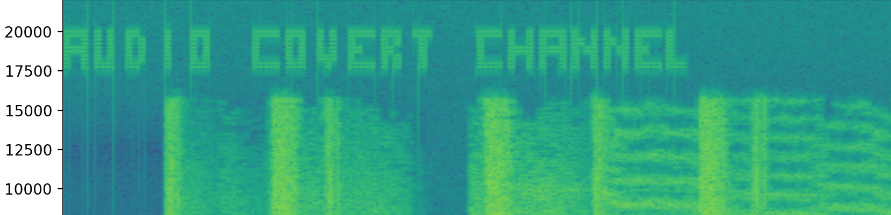

AudioCovert
A tool for secure communication through audio. AudioCovert embeds hidden messages into the high-frequency band of WAV files — imperceptible to the human ear — and decodes them by generating and visually analyzing the audio's spectrogram.

Project Overview
AudioCovert is a tool that enables secure communication through audio files by embedding hidden messages within WAV audio files. These alterations are made in the high-frequency signals of the audio spectrum, making them imperceptible to human ears. To decode the message, the spectrogram of the audio file is generated and analyzed visually, revealing the hidden content.
Features
- Embed Hidden Messages: Securely encode alphanumeric messages into audio files without affecting audible quality.
- Visual Message Decoding: Decode hidden messages by generating and inspecting the spectrogram of the audio file.
- Flexible Message Embedding: Supports encoding of various alphanumeric messages.
Installation
Before running AudioCovert, make sure you have Python installed. To install the required dependencies, use pip:
pip install numpy matplotlib scipyUsage
AudioCovert comes with two main functionalities: embedding hidden messages and decoding them by plotting the audio spectrum. Below are the instructions for each:
Embedding a Hidden Message
Use the following command to embed a message in an audio file:
python audio_covert.py embed <wav_file> <outfile> --message "Your secret message"- <wav_file>: Path to the input WAV file.
- <outfile>: Path where the output WAV file with the embedded message will be saved.
- --message: The message you wish to embed.
Plotting the Audio Spectrum
Use the following command to plot the audio spectrum and potentially reveal the hidden message:
python audio_covert.py plot <wav_file> [--xlim X] [--ylim Y]- <wav_file>: Path to the WAV file you want to analyze.
- --xlim: (Optional) Time range to display in the plot.
- --ylim: (Optional) Frequency range to display in the plot.
Example
Embedding a message:
python audio_covert.py embed example.wav output.wav --message "Hello World"Plotting the audio file to reveal the message:
python audio_covert.py plot output.wavTechnologies Used
- Python: The core programming language for AudioCovert.
- NumPy: For numerical computations during the encoding process.
- Matplotlib: For plotting the audio spectrum and revealing hidden messages.
- SciPy: For handling the WAV file and signal processing.